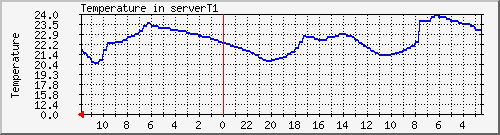
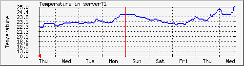
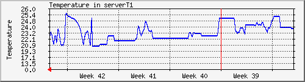
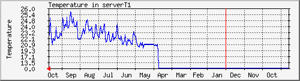

Temperature in serverT1
The statistics were last updated Wednesday, 24 October 2018 at 11:50,
at which time 'sensor_thgr122n_1-OK' had been up for 2018-10-24 11:42:00.
`Daily' Graph (5 Minute Average)

|
Max |
Average |
Current |
| Temperature (C) |
23.9 |
22.3 |
21.7 |
`Weekly' Graph (30 Minute Average)

|
Max |
Average |
Current |
| Temperature (C) |
25.5 |
22.5 |
21.2 |
`Monthly' Graph (2 Hour Average)

|
Max |
Average |
Current |
| Temperature (C) |
25.5 |
23.0 |
22.2 |
`Yearly' Graph (1 Day Average)

|
Max |
Average |
Current |
| Temperature (C) |
25.6 |
22.4 |
22.3 |
Back to Main Page